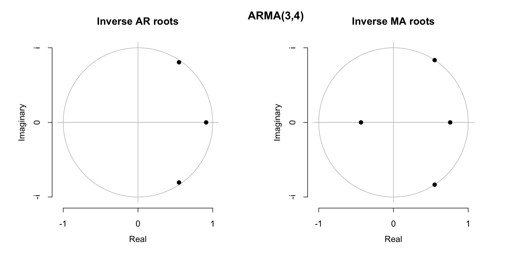
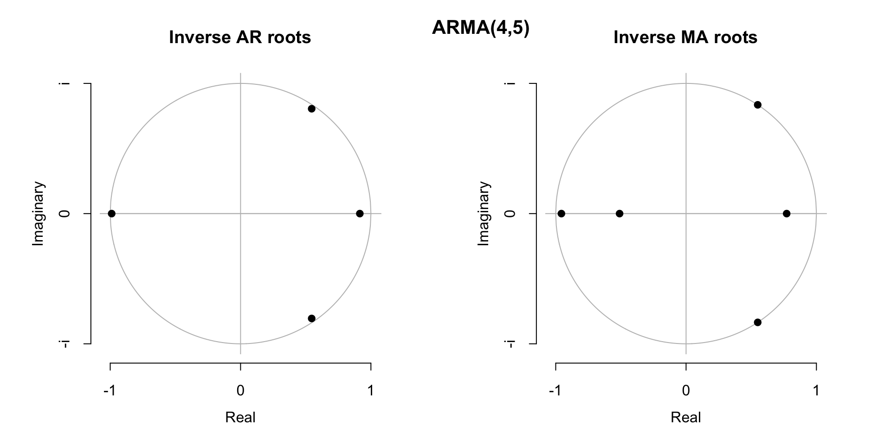

ECOM30004/90004
Time Series Analysis and Forecasting
Tutorial 9
Tutor: Pengyun (Kevin) Chen
University of Melbourne
Semester 2, 2025
Notice
Conditions of Use
- This document is intended for personal use and is NOT meant to be shared on the internet (e.g. Studocu, ThinkSwap, StudentVIP, Coursehero, etc.)
- Do not share this document with anyone, even if they are enrolled in ECOM30004/90004.
- Official course materials, such as lecture slides, tutorial sheets and prescribed readings should always be your primary point of reference.
Slides accessible here: https://pengyunc.quarto.pub/week9/
This tutorial
Agenda
- We will make use of
BAB3mth.csvfrom Week 4 andRetailSales.csvfrom Week 1. - All code is provided in the questions in order to focus on the concepts and results.
Part A: Common factors in ARMA models (BAB3mth.csv)Part B: Multiplicative models: seasonal autoregression (RetailSales.csv)
What’s going on?
Estimating an AR model is computationally simple.
- you can simply compute this by OLS (by matrix algebra, \(\hat{\beta}=(X^{\top}X)^{-1}(X^{\top}y)\))
Estimating a model with an MA component is much more computationally intensive.
- you need to rely on numerical methods (e.g. maximum likelihood)
Suppose we want to estimate the most basic ARMA(1,1). \[y_{t}=\phi_{1}y_{t-1}+U_{t}+\theta_{1}U_{t-1}\] The maximum likelihood algorithm proceeds as follows:
- First, guess \((\phi_{1},\theta_{1})\).
- Next, plug these values into the model, and compute the implied residuals \(U_{t}\).
- Compute the likelihood function (how probable the observed data are given those parameters)
- Repeat the process until the likelihood function is maximised.
However, with invertibility, the MA component can be approximated by AR models.
What’s going on?
However, with invertibility, the MA component can be approximated by AR models.
Lecture Example: MA(1)
\[\begin{aligned} Z_{t}=U_{t}+\theta_{1}U_{t-1}\;\;\xrightarrow{\textsf{can be written as}}\;\;& Z_{t}=\sum^{\infty}_{j=1}-(-\theta_{1})^{j}Z_{t-j}+U_{t}\\ \textsf{or, when there is finite horizon:}\;\;& Z_{t}=\sum^{t-1}_{j=1}-(-\theta_{1})^{j}Z_{t-j}+U_{t}-(-\theta_{1})^{t}U_{0} \end{aligned}\]
If \(|\theta_{1}|<1\), then \((-\theta_{1})^{t}\) shrinks to 0 as \(t\) becomes larger
What makes an MA model invertible?
Consider only the second equation. Moving all AR terms to the LHS gives: \[Z_{t}-\phi_{1}Z_{t-1}=U_{t}+\theta_{1}U_{t-1}+\theta_{2}U_{t-2}\]
Next, replace the notation with lag operators \(L\), where \(L^{n}(x_{t})=x_{t-n}\):
\[Z_{t}-\phi_{1}L(Z_{t})=U_{t}+\theta_{1}L(U_{t})+\theta_{2}L^{2}(U_{t})\]
\[(1-\phi_{1}L)Z_{t}=\color{green}{\underbrace{(1+\theta_{1}L+\theta_{2}L^{2})}_{\substack{\textsf{the MA lag polynomial}\\\textsf{we are interested in}}}}\color{black}{U_{t}}\]
Compute the solution of the
\[\begin{align*} 1+\theta_{1}z+\theta_{2}z^{2}&=0\\ \color{teal}{\boxed{\textsf{\small{}Suppose the solutions are $\to$}}}\qquad \zeta_{1},\zeta_{2}&=\frac{-\theta_{1}\pm\sqrt{\theta_{1}^{2}-4\theta_{2}}}{2\theta_{2}} \end{align*}\]
What makes an MA model invertible?
Compute the solution of the
\[\begin{align*} 1+\theta_{1}z+\theta_{2}z^{2}&=0\\ \color{teal}{\boxed{\textsf{\small{}Suppose the solutions are $\to$}}}\qquad \zeta_{1},\zeta_{2}&=\frac{-\theta_{1}\pm\sqrt{\theta_{1}^{2}-4\theta_{2}}}{2\theta_{2}} \end{align*}\]
This means that the lag polynomial can be rewritten as:
\[(\zeta_{1}-z)(\zeta_{2}-z)=0\]
\[\color{teal}{\zeta_{1}}\color{black}{(1-\zeta_{1}^{-1}z)\,\times\,} \color{teal}{\zeta_{2}}\color{black}{(1-\zeta_{2}^{-1}z)=0}\]
\[(1-\zeta_{1}^{-1}z)(1-\zeta_{2}^{-1}z)=0\]
What makes an MA model invertible?
What makes an MA model invertible?
ar1 ma1 ma2 intercept
0.903845857 -0.304583703 -0.310499904 0.004002802 Thus the lag polynomial for the MA component is: \[\begin{align*} 1+\theta_{1}z+\theta_{2}z^{2}&=0\\ 1-0.3046z-0.3105z^{2}&=0 \end{align*}\]
The polyroot() function in R solves for the complex roots of a polynomial.
MA2roots <- polyroot(c(1,eq$coef[c("ma1", "ma2")]))
MA2invroots <- 1/MA2roots
print(round(MA2invroots,4))[1] 0.7300+0i -0.4254+0iSo we have
The magnitudes for these inverse roots (takes form \(\zeta^{-1}=a+ib\)) are:
\[|\zeta^{-1}|=\sqrt{a^{2}+b^{2}} \quad\implies\quad\begin{aligned}|\zeta_{1}^{-1}|&=\sqrt{0.73^{2}+0^{2}}=0.73\;\color{green}{<1}\\ |\zeta_{2}^{-1}|&=\sqrt{(-0.4254)^{2}+0^{2}}=0.4254\;\color{green}{<1} \end{aligned}\]
The relevant R function is Mod():
Since both inverse roots are less than 1 in magnitude
Part A: Common factors in ARMA models
Progressively increment the orders of both AR and MA models so that we estimate ARMA(1,2), ARMA(2,3), ARMA(3,4) and ARMA(4,5) models.


Part A: Common factors in ARMA models
eq <- Arima(DY, order=c(1,0,2))
MA2invroots <- 1/polyroot(c(1,eq$coef[c("ma1", "ma2")]))
print(round(MA2invroots,4)) # MA Inverse roots[1] 0.7300+0i -0.4254+0i[1] 0.7300 0.4254
eq <- Arima(DY, order=c(2,0,3))
MA3invroots <- 1/polyroot(c(1,eq$coef[c("ma1", "ma2", "ma3")]))
print(round(MA3invroots,4)) # MA Inverse roots[1] 0.7477+0i -0.9564+0i -0.4993+0i[1] 0.7477 0.9564 0.4993
Both extra inverted
eq <- Arima(DY, order=c(3,0,4))
MA4invroots <- 1/polyroot(c(1,eq$coef[c("ma1", "ma2", "ma3", "ma4")]))
print(round(MA4invroots,4)) # MA inverse roots[1] 0.5508-0.8347i 0.5508+0.8347i 0.7586+0.0000i -0.4346+0.0000i[1] 1.0000 1.0000 0.7586 0.4346
With the addition of 2 to both AR and MA orders, we now have
eq <- Arima(DY, order=c(4,0,5))
MA5invroots <- 1/polyroot(c(1,eq$coef[c("ma1", "ma2", "ma3", "ma4", "ma5")]))
print(round(MA5invroots,4)) # MA inverse roots[1] 0.5496-0.8354i -0.9563+0.0000i 0.5496+0.8354i 0.7717+0.0000i
[5] -0.5101+0.0000i[1] 1.0000 0.9563 1.0000 0.7717 0.5101
Now there are three additional (very close to)
Part A: Common factors in ARMA models
In Tutorial 8, the optimal ARMA model for \(\Delta Y_{t}\), chosen by the AICc, is ARMA(1,2). Let’s assume that it is the correct model.
The AIC-selected ARMA(1,2) model can be written symbolically as:
\[(1-\xi_{1}^{-1}L)Z_{t}=(1-\zeta_{1}^{-1}L)(1-\zeta_{2}^{-1}L)U_{t}\]
The AR and MA inverse roots are:
xi_1 zeta_1 zeta_2
0.9038+0i 0.73+0i -0.4254+0i\[(1-0.9038L)Z_{t}=(1-0.73L)(1+0.4254L)U_{t}\]
If ARMA(1,2) is indeed the correct model, then if we increment the specification to ARMA(2,3), \[(1-\xi_{1}^{-1}L)(1-\color{purple}{\xi_{2}^{-1}}\color{black}{L)Z_{t}=(1-\zeta_{1}^{-1}L)(1-\zeta_{2}^{-1}L)(1\,-}\color{teal}{\,\zeta_{3}^{-1}}\color{black}{L)U_{t}}\] the “correct” values of the excess terms
Part A: Common factors in ARMA models
If ARMA(1,2) is indeed the correct model, then if we increment the specification to ARMA(2,3), \[(1-\xi_{1}^{-1}L)(1-\color{purple}{\xi_{2}^{-1}}\color{black}{L)Z_{t}=(1-\zeta_{1}^{-1}L)(1-\zeta_{2}^{-1}L)(1\,-}\color{teal}{\,\zeta_{3}^{-1}}\color{black}{L)U_{t}}\] the “correct” values of the excess terms
The AR and MA inverse roots for ARMA(2,3) are:
xi_1 xi_2 zeta_1 zeta_2 zeta_3
0.9092+0i -0.9885+0i 0.7477+0i -0.9564+0i -0.4993+0i\[(1-0.9092L)(1-\color{purple}{(-0.9885)}\color{black}{L)Z_{t}=(1-0.7477L)(1+0.4993L)(1-}\color{teal}{(-0.9564)}\color{black}{L)U_{t}}\]
where
Part A: Common factors in ARMA models
\[(1-0.9038L)Z_{t}=(1-0.73L)(1+0.4254L)U_{t}\]
\[(1-0.9092L)\color{red}{(1+0.9885L)}\color{black}{Z_{t}=(1-0.7477L)(1+0.4993L)}\color{red}{(1+0.9564L)}\color{black}{U_{t}}\]
By introducing the extra terms on both sides we have introduced what is referred to as a
There is only one true data generating process in reality, indicating there is a unique set of AR and MA roots \((\xi_{1}^{-1},\xi_{2}^{-1},\zeta_{1}^{-1},\zeta_{2}^{-1},\zeta^{-1}_{3})\). Therefore, there should only be a unique set of AR \((\phi_{1},\phi_{2})\) and MA \((\theta_{1},\theta_{2},\theta_{3})\) parameters.
Since the common factor can be cancelled out, the inverse roots \(\xi_{2}^{-1}\) and \(\zeta_{3}^{-1}\) can now take on a range of values as long as \(\xi_{2}^{-1}=\zeta_{3}^{-1}\).
\(\implies\) the model parameters \((\phi_{1},\phi_{2},\theta_{1},\theta_{2},\theta_{3})\) are NOT unique \(\implies\) the model is NOT identified! This is why the numerical algorithm pushes the excess parameters (\(\xi_{2}^{-1}\), \(\zeta_{3}^{-1}\)) towards the unit circle, even though we might expect them to shrink towards zero.
Part A: Common factors in ARMA models
If an ARMA(\(p,q\)) model has inverse roots that nearly cancel, especially near the unit circle, you should reconsider whether smaller orders would suffice. As AIC/AICc is balancing between model complexity and fit quality, it would usually be the case that it will work to avoid this issue. - However, it is worth acknowledging that AICc is not perfect and might select models that is too large.
When doing model selection searches, it is generally advised to avoid increasing the order of both AR and MA components simultaneously. It is better to increase AR or MA components separately, in which case this potential identification problem should be avoided.
Brute-force AIC search over (\(p,q\)) works for small grids but can cause instability at larger orders
\(\to\) there exists smarter methods (e.g. auto.arima) avoid this.
More pragmatically, at least in economics and finance it has become more common to rely simply on AR models rather than ARMA. - Avoids the common factor problem, quicker (can use OLS), more stable than ARMA, and simplifies extensions to multivariate models (e.g. VAR).
Part B: Multiplicative Models: Seasonal Autoregression
An alternative model for seasonality is the seasonal AR model.
A simple example is the
\[ Z_{t}=\Phi_{1}Z_{t-4}+U_{t}\quad \iff\quad (1-\Phi_{1}L^{4})Z_{t}=U_{t} \]
That is, \(Y_{t}\) is modeled directly in terms of the observation from one year ago. This is four time periods for quarterly data, hence the \(Z_{t-4}\) term.
In general we can have higher order seasonal AR models: \[ (1-\Phi_{1}L^{4}-\cdots-\Phi_{P}L^{4P})Z_{t}=U_{t} \]
which expresses the forecasts for \(Y_{t}\) in terms of observations from \(1,\dots,P\) years ago.
Part B: Multiplicative Models: Seasonal Autoregression
Most commonly the SAR model is combined with an AR model, so that seasonal and non-seasonal components are permitted.
This is done in a multiplicative manner using lag polynomials.
For example an AR(1),SAR(1) model is \[(1-\phi_{1}L)(1-\Phi_{1}L^{4})Z_{t}=U_{t}\] This is essentially a restricted AR(5) model.
In general an AR(\(p\)),SAR(\(P\)) model is \[(1-\phi_{1}L-\cdots-\phi_{p}L^{p})(1-\Phi_{1}L^{4}-\cdots-\Phi_{P}L^{4P})Z_{t}=U_{t}\] The selection of \(p\) and \(P\) can be handled in the usual way using AIC and residual autcorrelation checks with Ljung-Box testing.
Exercise 2(a)
Expand the lag polynomials in the AR(1),SAR(1) model to show that it is equivalent to an AR(5) model with particular parameter restrictions. \[(1-\phi_{1}L)(1-\Phi_{1}L^{4})Z_{t}=U_{t}\]
We can algebraically manipulate lag polynomials like any other polynomial:
\[\begin{align} (1-\phi_{1}L)(1-\Phi_{1}L^{4})&=1-\phi_{1}-\Phi_{1}L^{4}+\phi_{1}\Phi_{1}L\cdot L^{4}\\ &=1-\phi_{1}-\Phi_{1}L^{4}+\phi_{1}\Phi_{1}L^{5} \end{align}\]
Thus the model can be re-written as:
\[(1-\phi_{1}L-\Phi_{1}L^{4}+\phi_{1}\Phi_{1}L^{5})Z_{t}=U_{t}\]
\[\implies\qquad Z_{t}=\phi_{1}Z_{t-1}+\Phi_{1}Z_{t-4}-\phi_{1}\Phi_{1}Z_{t-5}+U_{t}\]
Comparing this model with the standard AR(5) setup: \[Z_{t}=\phi_{1}^* Z_{t-1}+\phi_{2}^* Z_{t-2}+\phi_{3}^* Z_{t-3}+\phi_{4}^* Z_{t-4}+\phi_{5}^* Z_{t-5}+U_{t}\]
the restrictions are \(\phi_{1}^*=\phi_{1}\), \(\phi_{2}=\phi_{3}=0\), \(\phi_{4}^{*}=\Phi_{1}\) and \(\phi_{5}^*=-\phi_{1}\Phi_{1}\).
Exercise 2(b)
Using RetailSales.csv from Week 1/2, carry out a model selection search over AR(\(p\)), SAR(\(P\)) models with maximum of 4 for both \(p\) and \(P\).
\[(1-\phi_{1}L-\cdots-\phi_{p}L^{p})(1-\Phi_{1}L^{4}-\cdots-\Phi_{P}L^{4P})Z_{t}=U_{t}\] What is the longest lag of \(Z_{t}\) implied by this AR,SAR model?
library(forecast)
# Set up log retail sales, 2000q1 to 2019q4
dt <- read.csv("RetailSales.csv")
Retail_m <- ts(dt$Total, frequency=12, start=c(1982,4), end=c(2024,9))
Retail_q <- aggregate(Retail_m, nfrequency=4)
log_Retail_q <- log(Retail_q)
Y <- window(log_Retail_q, start=c(2000,1), end=c(2019,4))
# Linear trend
Time <- time(Y)Exercise 2(b)
Set up deterministics:
Define samples for estimation and forecast evaluation:
Exercise 2(b)
Using RetailSales.csv from Week 1/2, carry out a model selection search over AR(\(p\)), SAR(\(P\)) models with maximum of 4 for both \(p\) and \(P\).
\[(1-\phi_{1}L-\cdots-\phi_{p}L^{p})(1-\Phi_{1}L^{4}-\cdots-\Phi_{P}L^{4P})Z_{t}=U_{t}\] What is the longest lag of \(Z_{t}\) implied by this AR,SAR model?
pmax <- 4
Pmax <- 4
AICc <- matrix(nrow=1+pmax, ncol=1+Pmax)
rownames(AICc) <- paste0("AR",0:pmax)
colnames(AICc) <- paste0("SAR",0:Pmax)
LBp <- AICc
for (p in 0:pmax){
for (P in 0:Pmax){
# Specification of AR(p), SAR(P) model:
eq_sar <- Arima(Y, order=c(p,0,0), xreg=X[t_est,],
seasonal=list(order=c(P,0,0), period=4))
AICc[1+p,1+P] <- eq_sar$aicc
LBp[1+p,1+P] <- Box.test(eq_sar$residuals, type="Ljung-Box",
fitdf=p+P, lag=12)$p.value
}
}Exercise 2(b)
Using RetailSales.csv from Week 1/2, carry out a model selection search over AR(\(p\)), SAR(\(P\)) models with maximum of 4 for both \(p\) and \(P\).
\[(1-\phi_{1}L-\cdots-\phi_{p}L^{p})(1-\Phi_{1}L^{4}-\cdots-\Phi_{P}L^{4P})Z_{t}=U_{t}\] What is the longest lag of \(Z_{t}\) implied by this AR,SAR model?
Results:
SAR0 SAR1 SAR2 SAR3 SAR4
AR0 -183.9288 -383.6143 -393.7658 -382.5243 -380.7893
AR1 -186.8830 -427.5469 -436.8123 -440.0512 -437.5669
AR2 -197.8278 -427.5613 -434.8512 -437.7967 -435.1855
AR3 -243.8547 -430.7242 -434.3403 -436.3189 -433.6872
AR4 -379.5825 -379.1405 -432.4139 -376.3585 -431.2748 SAR0 SAR1 SAR2 SAR3 SAR4
AR0 FALSE FALSE FALSE FALSE FALSE
AR1 FALSE FALSE FALSE TRUE FALSE
AR2 FALSE FALSE FALSE FALSE FALSE
AR3 FALSE FALSE FALSE FALSE FALSE
AR4 FALSE FALSE FALSE FALSE FALSE\[\color{teal}{\boxed{\textsf{\small\;found by expanding this }\to\;}}\quad\color{black}{ (1-\phi_{1}L)(1-\Phi_{1}L^{4}-\Phi_{2}L^{8}-\Phi_{3}L^{12})Z_{t}=U_{t}}\]
Since \(p=0.739>0.05\), we can maintain \(H_0\) of no residual autocorrelation
Exercise 2(b)
Use the a model with the selected \(p\) and \(q\) to forecast the four quarters of 2019 (i.e. 1,2,3,4-steps ahead), and compute their RMSE.
The forecasts from AR(1),SAR(3) are:
Exercise 2(c)
Previously we have identifed an AR(3) model is suitable when also using a linear trend with GFC break and quarterly dummies. Estimate this model, obtain the forecasts for the four quarters of 2019, and compute their RMSE.
The forecasts from AR(3) are:
Exercise 2(d)
Repeat the search in (b) but with quarterly dummies also included. This is combining both quarterly dummies and seasonal AR modelling to capture the seasonality in the data.
Exercise 2(d)
Repeat the search in (b) but with quarterly dummies also included. This is combining both quarterly dummies and seasonal AR modelling to capture the seasonality in the data.
We would like to check if including the quarterly dummies in the seasonal AR model may improve the model further: XQD instead)
pmax <- 4
Pmax <- 4
AICc <- matrix(nrow=1+pmax, ncol=1+Pmax)
rownames(AICc) <- paste0("AR",0:pmax)
colnames(AICc) <- paste0("SAR",0:Pmax)
LBp <- AICc
for (p in 0:pmax){
for (P in 0:Pmax){
eq_sar <- Arima(Y, order=c(p,0,0), xreg=XQD[t_est,], # <-- changed
seasonal=list(order=c(P,0,0), period=4))
AICc[1+p,1+P] <- eq_sar$aicc
}
}Exercise 2(d)
Repeat the search in (b) but with quarterly dummies also included. This is combining both quarterly dummies and seasonal AR modelling to capture the seasonality in the data.
We would like to check if including the quarterly dummies in the seasonal AR model may improve the model further: XQD instead)
Thus when quarterly dummies are used…
SAR0 SAR1 SAR2 SAR3 SAR4
AR0 FALSE FALSE FALSE FALSE FALSE
AR1 FALSE FALSE FALSE FALSE FALSE
AR2 FALSE FALSE FALSE FALSE FALSE
AR3 TRUE FALSE FALSE FALSE FALSE
AR4 FALSE FALSE FALSE FALSE FALSE… AR(3) remains the preferred specification
Thank you for coming!
Access Slides: https://pengyunc.quarto.pub/week9/